いしかわ百万石文化祭2023 カウントダウンボード
「デジタル顔はめパネル」機能で注目をひく


- 作品概要
- 国民文化祭の開催に向け、小松空港・能登空港にカウントダウンボードが設置されました。残り日数の表示に加えて、PR動画の放映や、画像処理を利用した顔はめ看板としての機能も組み込まれています。所属ゼミを中心として制作にあたり、私は動作を制御するプログラムの制作を担当しました。
- 制作時期／種別
- 2022年10～12月／プログラミング
- 使用ツール
- Pyhton（プログラム本体）
- After Effects（能登空港版のアニメ制作）
左：小松版ボードの詳細
60インチモニターをスチロール材で覆っています。内部にはWEBカメラとパソコンが備え付けられています。 国民文化祭のPR動画が再生されており、ボードの前に人が立つと、その人の顔に隈取の化粧が施されて表示されます。 （左の野村萬斎さんのパネルは私達の制作物ではありません）
右：能登版ボードの詳細
キリコ祭りのアニメーションが再生されており、担ぎ手の顔部分にボードを見ている人の顔がはめ込まれます。 （左右のパネル・ボードは制作物ではありません）
小松版 動作フロー
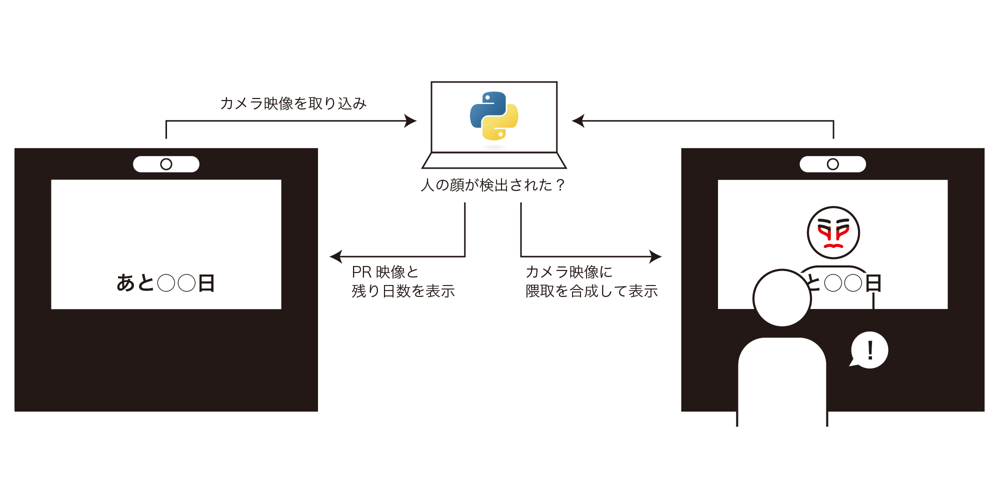顔検出には速度を重視してMTCNNを、画像処理にはOpenCVとPillowを使用しました。並列処理ができるthreadingモジュールで処理を高速化し、リアルタイムでの顔検出と画像合成を可能にしています。
小松版 ソースコード
# python -m pip install
import os
os.environ["OPENCV_VIDEOIO_MSMF_ENABLE_HW_TRANSFORMS"] = "0"
import sys
import glob
import ffmpeg # 要インストール
import wave
import pyaudio # 要インストール data\PyAudio-0.2.11-cp311-cp311-win_amd64.whl
import cv2 # 要インストール opencv-python
import numpy as np
from PIL import Image # 要インストール pillow
from mtcnn_cv2 import MTCNN # 要インストール mtcnn-opencv
import datetime
import time
import threading
import queue
def main():
pv_afile = "data/pv.wav"
pv_vfile = "data/pv.mp4"
cm_afiles = glob.glob("data\\audio\\*.wav")
cm_vfiles = glob.glob("video\\*.mp4")
cv2.namedWindow("frame", cv2.WINDOW_NORMAL)
cv2.setWindowProperty("frame", cv2.WND_PROP_FULLSCREEN, cv2.WINDOW_FULLSCREEN)
camera = RunCamera()
camera.start()
drawer = DrawImages()
today = datetime.date.today()
while True:
pv = SyncPlayer(pv_afile, pv_vfile, drawer)
pv.play()
for afile, vfile in zip(cm_afiles, cm_vfiles):
cm = SyncPlayer(afile, vfile)
cm.play()
if datetime.date.today() != today:
drawer = DrawImages()
today = datetime.date.today()
class SyncPlayer:
"""
動画と音声を同時に再生する
afile: 音声ファイル
vfile: 動画ファイル
drawer: 描画用オブジェクト
"""
e_audio = threading.Event()
e_video = threading.Event()
def __init__(self, afile, vfile, drawer=None):
self.afile = afile
self.vfile = vfile
self.drawer = drawer
if drawer is not None:
self.counter = 0
self.is_detect = False
def play(self):
"""スレッドを立ち上げて再生開始"""
audio_T = threading.Thread(target=self.play_audio, daemon=True)
audio_T.start()
self.play_video()
audio_T.join()
def play_audio(self):
"""音声を再生"""
# 初期設定
wf = wave.open(self.afile, "rb")
p = pyaudio.PyAudio()
stream = p.open(
format=p.get_format_from_width(wf.getsampwidth()),
channels=wf.getnchannels(),
rate=wf.getframerate(),
output=True,
)
CHUNK = 1024
data = wf.readframes(CHUNK)
# 音声再生開始の信号を動画スレッドに送信
self.e_audio.set()
# 動画スレッドから信号を受け取るまで待機
self.e_video.wait()
# 再生開始
self.e_audio.clear()
while len(data) > 0:
stream.write(data)
data = wf.readframes(CHUNK)
stream.stop_stream()
stream.close()
p.terminate()
def play_video(self):
"""動画を再生"""
# 初期設定
cap = cv2.VideoCapture(self.vfile)
frame_duration = int(1000 / cap.get(cv2.CAP_PROP_FPS))
# 動画再生開始の信号を送信
self.e_video.set()
self.e_audio.wait()
# 再生開始
self.e_video.clear()
start = time.time()
while True:
# 再生開始からの経過時間と本来の再生位置を比較
elapsed_time = (time.time() - start) * 1000
play_time = int(cap.get(cv2.CAP_PROP_POS_MSEC))
# フレームが本来表示されるべきタイミングより1F分遅れた場合
if elapsed_time >= play_time + frame_duration:
# 追いつくまでcapをreadしカーソルを進める
ret, frame = cap.read()
if not ret:
break
continue
# 本来のタイミングより早かった場合
elif elapsed_time < play_time:
# その時点のフレームを表示したまま待機
cv2.waitKey(1)
continue
# 遅延が1F以内
else:
ret, frame = cap.read()
if ret:
if self.drawer is not None:
frame = self.composite_wipe(frame)
cv2.imshow("frame", frame)
if cv2.waitKey(1) == 27:
sys.exit()
else:
break
cap.release()
def composite_wipe(self, frame_pv):
"""カメラ映像をワイプみたいに合成する"""
result_dict = RunCamera.q_dict.get()
frame_cam = RunCamera.q_camera.get()
if self.counter > 10:
self.is_detect = not self.is_detect
if self.is_detect:
# 顔検出
cam = cv2pil(frame_cam)
cam = self.drawer.draw_face(cam, result_dict)
cam = cam.resize((288, 162))
pv = cv2pil(frame_pv)
pv.paste(cam, (0, 0))
pv = self.drawer.draw_date(pv)
image_result = pil2cv(pv)
if len(result_dict) == 0:
self.counter += 1
else:
self.counter = 0
else:
pv = cv2pil(frame_pv)
pv = self.drawer.draw_date(pv)
pv = pil2cv(pv)
image_result = pv
if len(result_dict) >= 1:
self.counter += 1
else:
self.counter = 0
return image_result
class RunCamera(threading.Thread):
"""
バックグラウンドで常にカメラ映像を取得\n
カメラ画像（cv2）と顔検出結果（dict）をキューに入れて渡す
"""
cap = cv2.VideoCapture(1, cv2.CAP_MSMF)
cap.set(cv2.CAP_PROP_FRAME_WIDTH, 640)
cap.set(cv2.CAP_PROP_FRAME_HEIGHT, 480)
gamma = 2.0
img2gamma = np.zeros((256, 1), dtype=np.uint8)
detector = MTCNN()
q_camera = queue.Queue(1)
q_dict = queue.Queue(1)
def __init__(self):
threading.Thread.__init__(self, daemon=True)
def run(self):
while True:
ret, frame = self.cap.read()
image = self.process(frame)
RunCamera.q_camera.put(image)
result = self.detector.detect_faces(image)
RunCamera.q_dict.put(result)
def process(self, frame):
# 画像の端削除
img = frame[60:420, 0:640]
# 明るくする
for i in range(256):
self.img2gamma[i][0] = 255 * (float(i) / 255) ** (1.0 / self.gamma)
img = cv2.LUT(img, self.img2gamma)
# 画像を反転
image_result = cv2.flip(img, 1)
return image_result
def cv2pil(image):
"""OpenCV型 -> PIL型"""
new_image = image.copy()
if new_image.ndim == 2: # モノクロ
pass
elif new_image.shape[2] == 3: # カラー
new_image = cv2.cvtColor(new_image, cv2.COLOR_BGR2RGB)
elif new_image.shape[2] == 4: # 透過
new_image = cv2.cvtColor(new_image, cv2.COLOR_BGRA2RGBA)
new_image = Image.fromarray(new_image)
return new_image
def pil2cv(image):
"""PIL型 -> OpenCV型"""
new_image = np.array(image, dtype=np.uint8)
if new_image.ndim == 2: # モノクロ
pass
elif new_image.shape[2] == 3: # カラー
new_image = cv2.cvtColor(new_image, cv2.COLOR_RGB2BGR)
elif new_image.shape[2] == 4: # 透過
new_image = cv2.cvtColor(new_image, cv2.COLOR_RGBA2BGRA)
return new_image
class DrawImages:
"""
フレームにいろんな画像を貼り付けるクラス\n
日付変更時にインスタンスを作成し画像（インスタンス変数）を更新
"""
def __init__(self):
self.underway = Image.open("data/underway.png")
self.date = self.create_date()
self.kumadori = Image.open("data/kumadori.png")
def create_date(self):
"""日付画像の作成"""
# 終了時刻の設定(2023/10/14)
limit = datetime.date(year=2023, month=10, day=14)
base_text = Image.open("data/bg.png")
# 数字100の位の左上の座標、サイズ（2:3）
x, y = 1470, -7
w, h = 100, 150
num = []
for i in range(10):
n = Image.open("data/" + str(i) + ".png")
n = n.resize((w, h))
num.append(n)
# 残り日数を取得（0日未満は0日に）
remaining_date = limit - datetime.date.today()
if remaining_date.days <= 0:
remaining_date = datetime.timedelta(days=0)
base_text = self.underway
return base_text
# 残り日数を位ごとに分解
p100 = int(remaining_date.days // 100)
p10 = int(remaining_date.days // 10 % 10)
p1 = int(remaining_date.days % 10)
# bgに数字画像貼り付け
if remaining_date.days >= 100:
base_text.paste(num[p100], (x, y))
if remaining_date.days >= 10:
base_text.paste(num[p10], (x + w, y))
base_text.paste(num[p1], (x + w * 2, y))
return base_text
def draw_date(self, bg):
"""日付画像を貼り付ける"""
bg.paste(self.date, (-130, 0), self.date)
return bg
def draw_face(self, bg, result_dict):
"""キューから受け取った顔位置（dict）から隈取の画像を貼り付ける"""
for result in result_dict:
box_360p = result["box"]
keypts = result["keypoints"]
x, y, w, h = [n * 1 for n in box_360p]
at1, at2 = np.array(keypts["left_eye"]) - np.array(keypts["right_eye"])
eyes_deg = np.rad2deg(np.arctan2(at1, at2)) + 90
kumadori = self.kumadori.resize((w, h)).rotate(eyes_deg)
bg.paste(kumadori, (x, y), kumadori)
return bg
def extract_video():
"""
動画ファイルから音声を抽出して指定のフォルダに書き出す
"""
video_files = glob.glob("video\\*.mp4")
for file in video_files:
outname = file.replace("video\\", "data\\audio\\").replace(".mp4", ".wav")
stream = ffmpeg.input(file)
stream = ffmpeg.output(stream, outname, ac=2)
ffmpeg.run(stream, overwrite_output=True)
if __name__ == "__main__":
# extract_video()
main()能登版 動作フロー
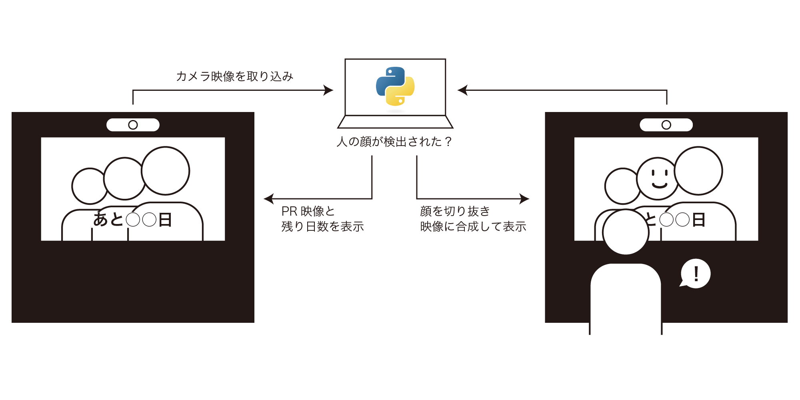キリコ祭りのアニメーションの顔部分をマスクした動画と、フレームごとのマスクの座標を記録したファイルを別途用意し、顔を検出したらそれらのデータから適切な位置に検出した顔を配置・合成します。
能登版 ソースコード
import cv2
import numpy as np
from mtcnn_cv2 import MTCNN
from PIL import Image
import datetime
# Pillow <-> cv2 画像形式変換
def pil2arr(image):
new_image = np.array(image, dtype=np.uint8)
new_image = cv2.cvtColor(new_image, cv2.COLOR_RGBA2BGRA)
return new_image
def arr2pil(image):
new_image = image.copy()
new_image = cv2.cvtColor(new_image, cv2.COLOR_BGRA2RGBA)
new_image = Image.fromarray(new_image)
return new_image
# 日付作成
def countDown():
# 終了時刻の設定(2023/10/14)
limit = datetime.date(year=2023, month=10, day=14)
# 画像読み込み
background = Image.open('data/BG.png')
# 数字100の位の左上の座標
num_pos = [1330, 870]
# リサイズ 1:1.5
num_resize= [120, 180]
num10 = [Image.open('data/' + str(i) + '.png') for i in range(10)]
num = [num.resize(num_resize) for num in num10]
bg = background.copy()
# 残り日数を取得（0日未満は0日に）
remaining_date = limit - datetime.date.today()
if remaining_date.days < 0: remaining_date = datetime.timedelta(days=0)
# 残り日数を位ごとに分解
p100 = int(remaining_date.days //100)
p10 = int(remaining_date.days //10%10)
p1 = int(remaining_date.days %10)
# bgに数字画像貼り付け
if remaining_date.days >= 100:
bg.paste(num[p100], num_pos)
if remaining_date.days >= 10:
bg.paste(num[p10], (num_pos[0]+num_resize[0], num_pos[1]))
bg.paste(num[p1], (num_pos[0]+num_resize[0]*2, num_pos[1]))
return bg
# カメラ画像から顔を検出して切り抜き
def faceCrop(dic, cframe, scale):
for i, result in enumerate(dic):
bbox = result['box']
# 長方形のリサイズ
bbox = [n*scale for n in bbox]
# 検出した顔の切り抜き
cframe_crop = arr2pil(cframe)
cframe_crop = cframe_crop.crop((bbox[0], bbox[1], bbox[0]+bbox[2], bbox[1]+bbox[3]))
return cframe_crop
# 顔を背景に合成
def facePaste(frame, face, mask, pos, alpha: bool):
mask_r = mask.resize(face.size)
if alpha == False:
face.putalpha(mask_r)
resize = pos[2]-pos[0], pos[3]-pos[1]
face_resize = face.resize(resize)
frame_pil = arr2pil(frame)
frame_pil.paste(face_resize, (pos[0],pos[1]), face_resize)
return frame_pil
def str2int(pos: str):
spl = pos.split(',')
spl_int = [int(pt) for pt in spl]
return spl_int
def main():
# 画像読み込み
temp = Image.new('RGBA', (500,500) ,(0,0,0,0))
# カメラ設定
cap = cv2.VideoCapture(0)
cap.set(cv2.CAP_PROP_FRAME_WIDTH, 1920)
detector = MTCNN()
cresult_dic = []
# 顔認識スケール設定（小さいほど軽い・精度低い）
scale = 6
cwidth = cap.get(cv2.CAP_PROP_FRAME_WIDTH)
cheight = cap.get(cv2.CAP_PROP_FRAME_HEIGHT)
date = countDown()
face = temp.copy()
face_spare = temp.copy()
video = [cv2.VideoCapture('kiriko1.mp4'), cv2.VideoCapture('kiriko2.mp4')]
text = [open('pos1.txt', 'r'),open('pos2.txt', 'r')]
mfile = 'data/mask1.png', 'data/mask2.png'
mask = Image.open(mfile[0]).convert('L')
count = 0
cr = 0
alpha = True
today = datetime.datetime.now()
# 表示用ウィンドウ作成
cv2.namedWindow('screen', cv2.WINDOW_NORMAL)
cv2.resizeWindow('screen', 640, 360)
cv2.setWindowProperty('screen', cv2.WND_PROP_FULLSCREEN, cv2.WINDOW_FULLSCREEN)
# ループ
while True:
dt = datetime.datetime.now()
if dt.hour==0 and dt.minute==0 and dt.second==0:
date = countDown()
# 動画の顔検出
ret, frame = video[cr].read()
line_n = text[cr].readline()
line = line_n.replace('\n', '')
# 動画が終わったらループ
if line == '':
cr += 1
if cr == 2: cr = 0
video[cr].set(cv2.CAP_PROP_POS_FRAMES, 0)
text[cr].seek(0)
mask = Image.open(mfile[cr]).convert('L')
continue
# カメラの顔検出
cret, cframe = cap.read()
cframe = cv2.flip(cframe, 1)
cframe_r = cv2.resize(cframe,(int(cwidth/scale), int(cheight/scale)))
det_len = len(detector.detect_faces(cframe_r))
if det_len >= 1:
cresult_dic = detector.detect_faces(cframe_r)
# 顔画像を検出した物で上書き
if det_len >= 1:
face = faceCrop(cresult_dic, cframe, scale)
face_spare = face.copy()
alpha = False
count = 0
# 検出なしなら前フレームの顔を使用
else:
count += 1
if count < 300:
face = face_spare.copy()
alpha = False
else:
face = temp.copy()
alpha = True
# 合成・表示
pos = str2int(line)
frame_face = facePaste(frame, face, mask, pos, alpha)
frame_date = Image.composite(date, frame_face, date)
cv2.imshow('screen', pil2arr(frame_date))
if cv2.waitKey(1) == 27: break
cap.release()
for v in video: v.release()
for t in text: t.close()
cv2.destroyAllWindows()
main()北國新聞様に取材していただきました

デッサン
教わらずに見て学ぶデッサン
- 作品概要
- ダヴィンチやデューラーなど著名な画家や、大学の教授のデッサンの模写から始め、実際にモチーフを見ながらのデッサンも行いました。完全に自己流ですが、ストロークの向きで面の角度を表現しているのが特徴的かと思います。
- 制作時期／種別
- 2022年10月～2023年8月／デッサン
- 使用ツール
- 鉛筆（ステッドラー、6B～4H）
模写


非模写


Blender練習
体系的に理解したい
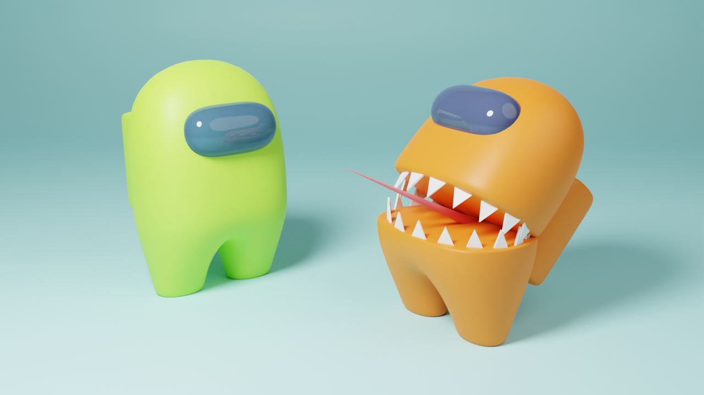
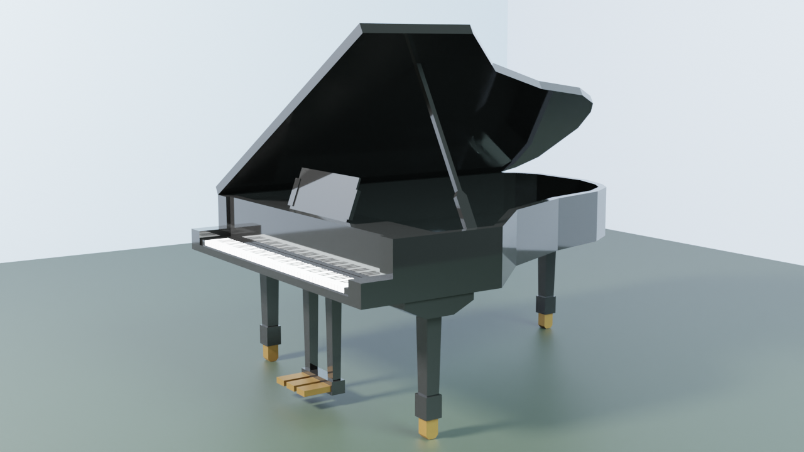
 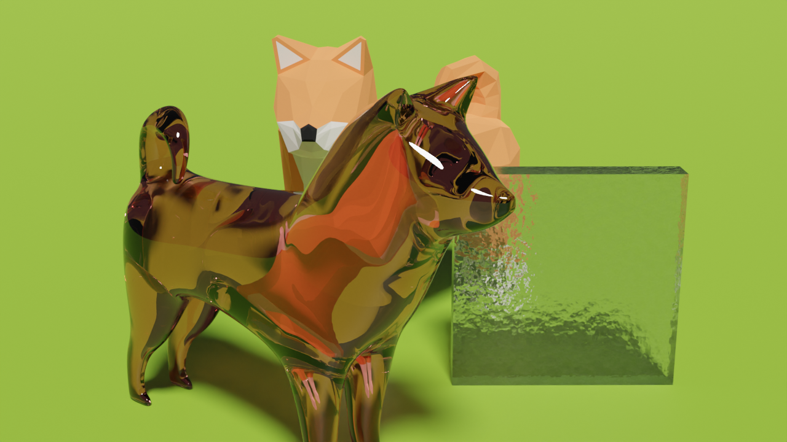
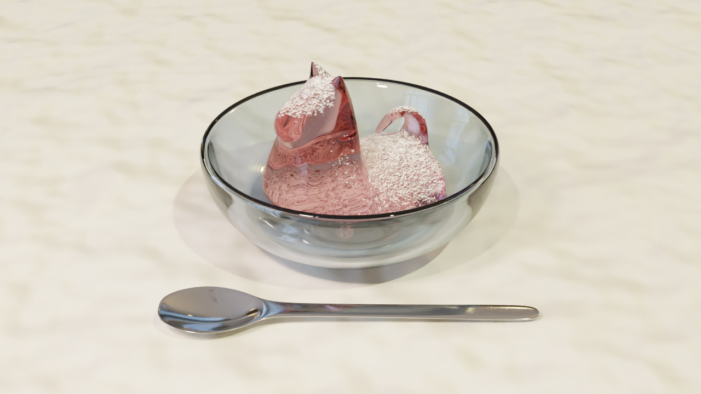
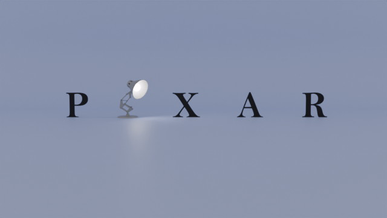
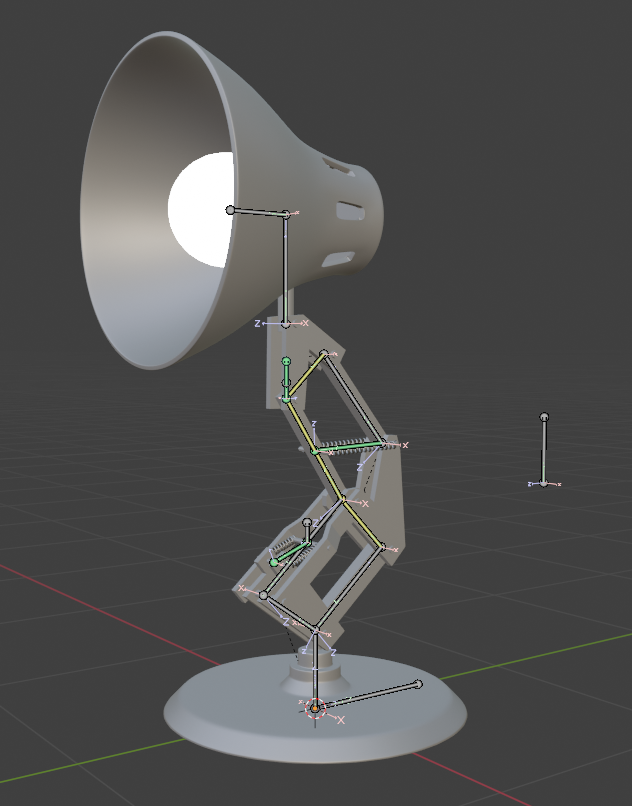
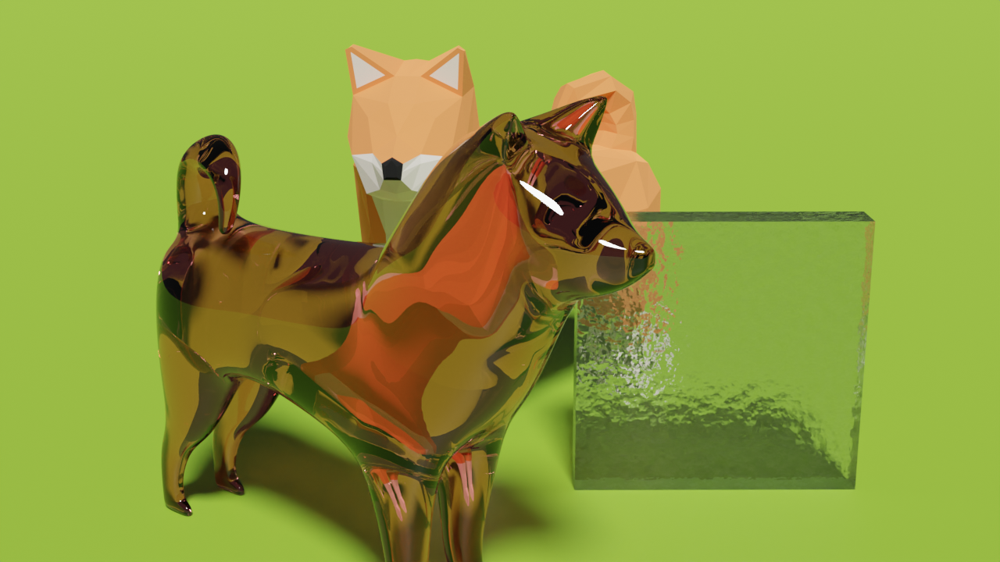
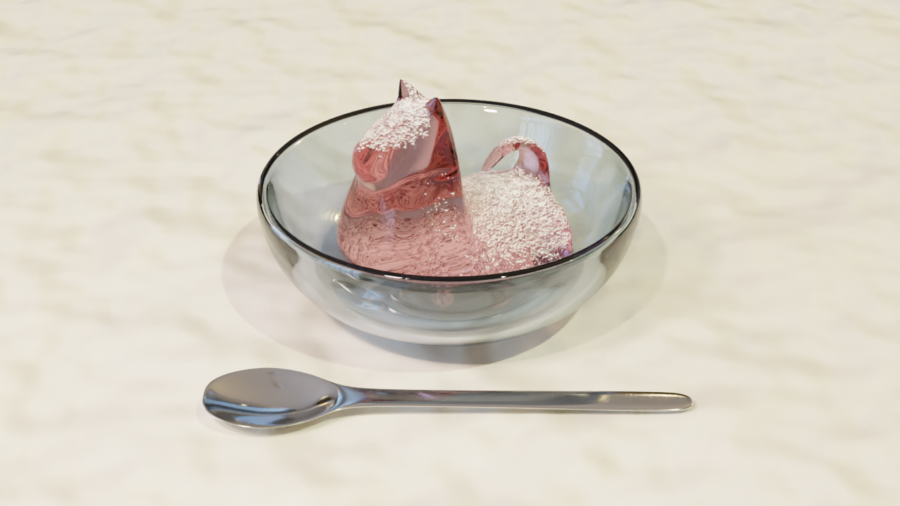
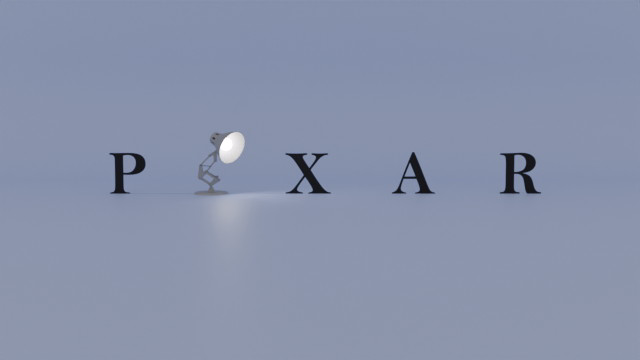
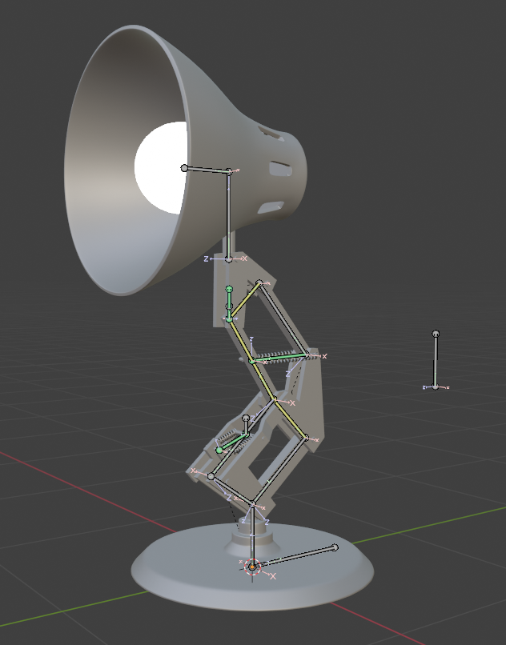
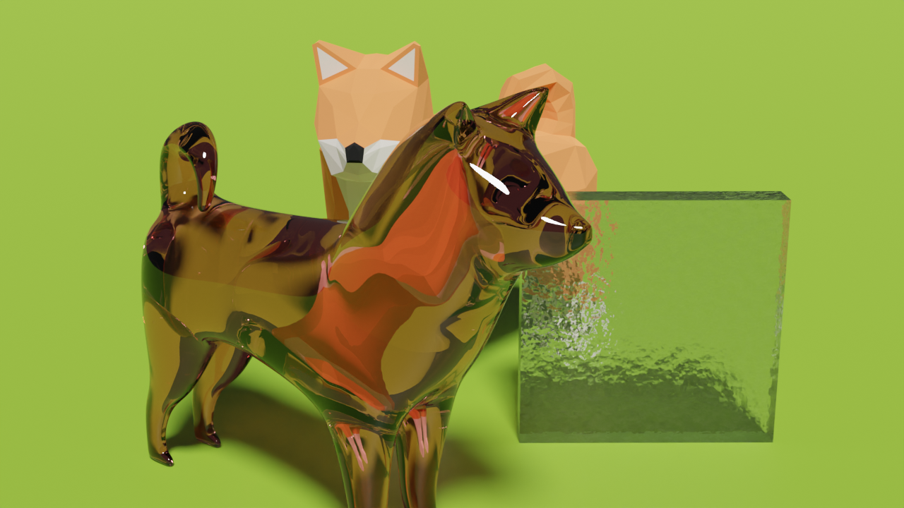
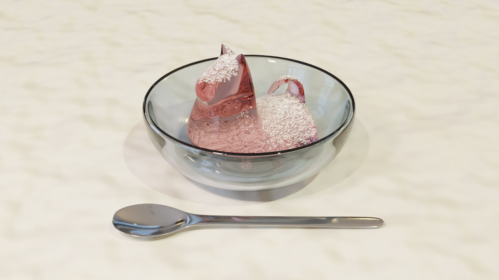
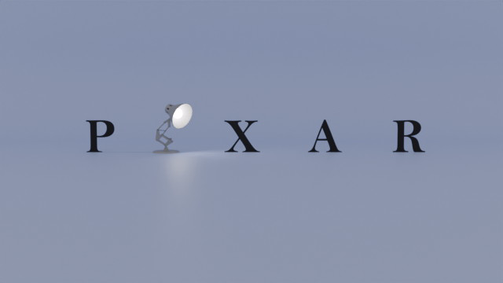
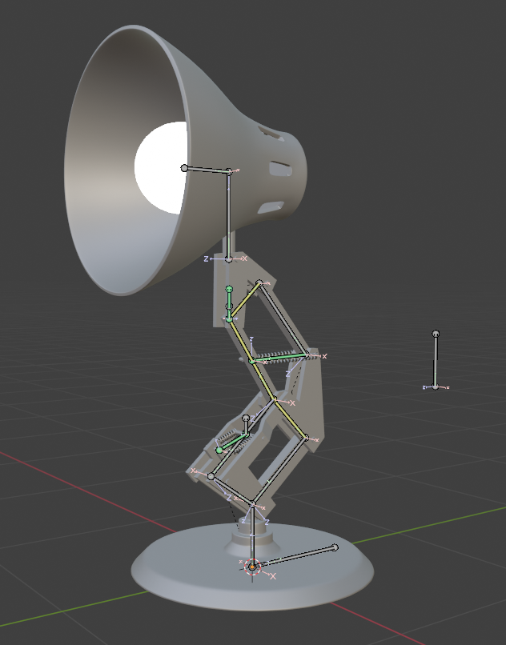
- 作品概要
- Blenderの練習で作成したものです。ネット上のチュートリアルを参考にしているものがほとんどです。手順をなぞるだけでなく、何を目的とした工程かを理解しながら作ることを心がけています。
- 制作時期／種別
- 2023年10月～ ／3DCG
- 使用ツール
- Blender